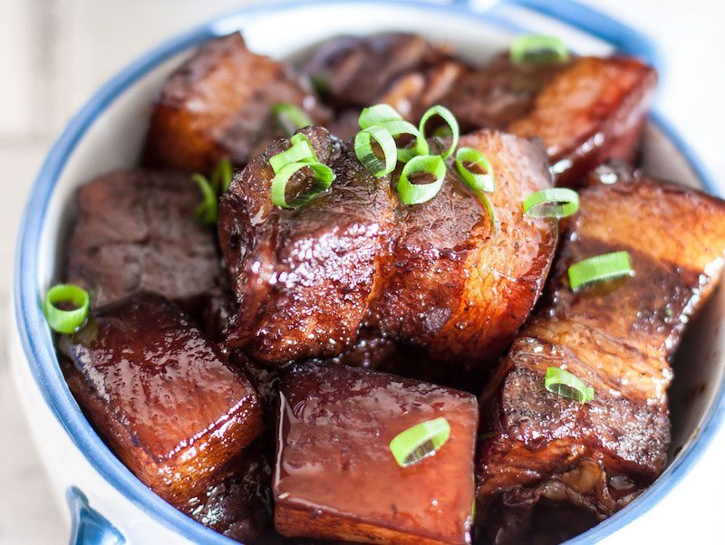

Administrator info
Hi, My name is Massimo Chen, and I'm an undergraduate student at NJIT. My major is Computer Science, and this website is for my IT101 class assignment.
My Favorite Food
Since I was little, my mom used to cook Braised Pork Belly when I wasn't in a good mood.
Now that I live far from home, I often miss my mom's cooking. Even though there are multiple
recipes for this dish online, most of them don't taste the same as my mother's.
The closest one that I found online is this one shown below.
1) Chinese Braised Pork Belly (Hong Shao Rou)

Braised pork belly recipe:
Ingredients: 12 ounces lean, skin-on pork belly (340g)
2 tablespoons oil
1 tablespoon rock sugar (rock sugar is preferred or you can use granulated sugar)
3 tablespoons Shaoxing wine
1 tablespoon soy sauce
1/2 tablespoon dark soy sauce
2 cups water
INSTRUCTIONS:
Start by cutting your pork belly into 3/4-inch thick pieces.
Bring a pot of water to a boil. Blanch the pork belly pieces for a couple minutes. This gets rid of impurities and starts the cooking process. Take the pork out of the pot, rinse, and set aside.
Over low heat, add the oil and sugar to your wok. Melt the sugar slightly and add the pork. Raise the heat to medium and cook until the pork is lightly browned.
Turn the heat back down to low and add shaoxing cooking wine, regular soy sauce, dark soy sauce, and water.
NOTE: It is very important to the color and flavor of this dish that you have both kinds of soy sauce! Just head to your local Asian market, buy a bottle of each, and it will last you a year!
Cover and simmer for about 45 minutes to 1 hour until pork is fork tender. Every 5-10 minutes, stir to prevent burning and add more water if it gets too dry.
Once the pork is fork tender, if there is still a lot of visible liquid, uncover the wok, turn up the heat, and stir continuously until the sauce has reduced to a glistening coating.
Source:
https://thewoksoflife.com/shanghai-style-braised-pork-belly/